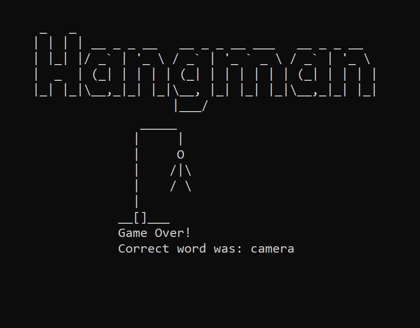

First complete game. 24 hour assignment for Eleven Fifty Academy. Words randomly taken from 800+ word bank. Complete functionality in console, no external ui. Features minor ascii art.

Software Developer who uses C#, Html, and CSS to build applications and APIs. Connecticut born and raised; now located in Indianapolis. Problem solver and out-of-the-box thinker. Alumni of Cedarville University and recent graduate of Eleven Fifty Academy . My passion for coding stems from my combined interests in creativity and logic--I'm ecstatic to pursue a career in a field I'm passionate about.
Work experience consists of a variety of fields: fast food team member at KFC, Taco Bell, and Dairy Queen, dietary aide at Matulaitis Nursing Home, and--most recently--painting contractor. These jobs have shaped my work ethic into one of precision, grit, and teamwork.
Married Shannon Jolley in May of 2018. Happy bird owner. Loves hiking, snowboarding, and surfing. Spent fall semester 2016 sudying in Brisbane, Australia. While abroad I volunteered at Campbell's Club--an organization that offers food and activities for the disabled in Brisbane. This experienced helped shape me into an eager servant.
First complete game. 24 hour assignment for Eleven Fifty Academy. Words randomly taken from 800+ word bank. Complete functionality in console, no external ui. Features minor ascii art.
Asp.Net MVC forum. Utilizes bootstrap, nested partial views, ViewBags, ViewData Dictionaries, foreign keys, user identities, and custom art. A work in progress that I hope to add features like user renown, more profile customization, and user roles (mainly admin and moderator).

I'm always looking for projects to expand my portfolio. I'm currently in the design stage of a photography website for my wife's company Ruby Photography LLC.